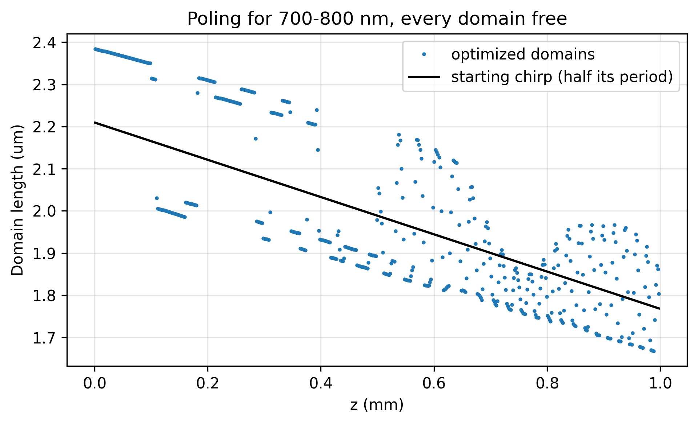
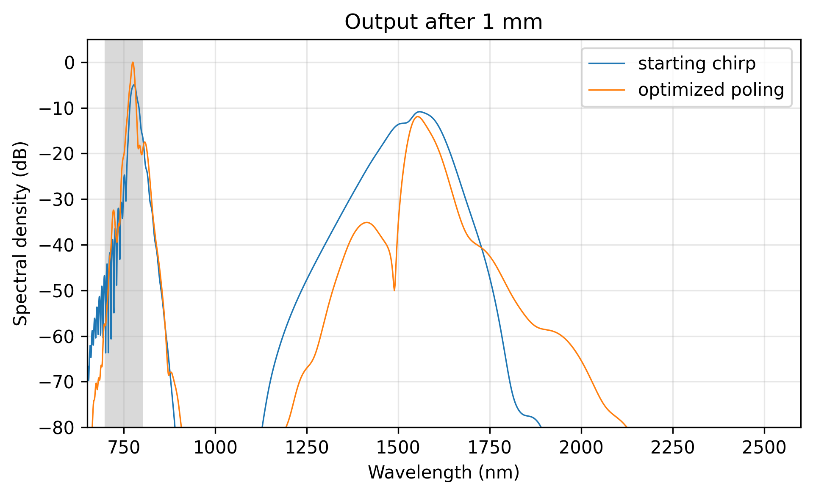

Nonlinear-EME: PPLN Inverse Design
Highlighted features: optimize with every poling domain length free ('poling, <section>, domain_lengths'), its gradient from one adjoint propagation of the pulse, a 'band_energy' objective on a femtosecond supercontinuum, Poling.to_domain_lengths to start from a chirped poling, and a total-length Constraint. The device and the pulse are those of the Nonlinear-EME: Supercontinuum example.
This code example is licensed under the BSD 3-Clause License.
import sys
import emodeconnection as emc
import numpy as np
from matplotlib import pyplot as plt
## Inverse design of the poling of a PPLN supercontinuum source. The device,
## the pulse and the starting poling are those of the Supercontinuum example:
## a 50 fs, 100 pJ pulse at 1550 nm in a 1 mm thin-film lithium niobate
## ridge, poled with a period chirped from the SHG period to 0.8 of it. Here
## every domain length is a free variable, and the optimizer maximizes the
## energy the output carries in the 700-800 nm band. Its gradient with
## respect to every domain comes from one adjoint propagation, so a design
## with hundreds of domains costs a few propagations per step and no mode
## solve after EME().
## Set simulation parameters
center_wavelength = 1550.0 # [nm]
dx, dy = 20, 20 # [nm] resolution
w_core = 1600 # [nm] ridge top width
h_film, h_ridge = 600, 300 # [nm] LN film thickness and etch depth
h_box, h_clad = 2000, 1000 # [nm] SiO2 below and above
sidewall_angle = 15 # [deg] from vertical
length = 1e6 # [nm] 1 mm
duration = 50.0 # [fs] intensity FWHM
energy = 100.0 # [pJ]
repetition_rate = 100e6 # [Hz]
wavelength_range = (650.0, 2600.0) # [nm] the pulse's frequency grid
num_points = 1536 # frequency points (the time window is 4.4 ps)
chirp_ratio = 0.8 # output period over input period
band = (700.0, 800.0) # [nm] the target band
## One tracked mode, two field patterns and a 4.4 ps time window (three
## quarters of the Supercontinuum example's, over four times the pulse's 0.8 ps
## drift) keep each evaluation to about 30 s. That example tracks a
## second TE mode, which carries no energy at the output.
max_rank = 2
## Every domain may shrink to 1 um (a fabrication minimum) or grow to 3.5 um.
domain_bounds = (1000.0, 3500.0) # [nm]
max_evaluations = 20
window_width = w_core + 2 * 2000
window_height = h_box + h_film + h_clad
## theta = pi/2 puts the optic axis along simulation x: x-cut.
ln_x_cut = emc.MaterialSpec(material='LN_MgO', theta=np.pi / 2)
em = emc.EMode(emode_cmd=sys.argv[1:], simulation_name='ppln_inverse', verbose=True)
def build_ridge(wavelength, num_modes, name):
"""The ridge at one wavelength, solved and labeled."""
em.settings(
wavelength=wavelength,
x_resolution=dx,
y_resolution=dy,
window_width=window_width,
window_height=window_height,
num_modes=num_modes,
background_material='SiO2',
)
em.shape(name='BOX', material='SiO2', height=h_box)
em.shape(
name='LN',
material=ln_x_cut,
fill_material='SiO2',
height=h_film,
mask=w_core,
etch_depth=h_ridge,
sidewall_angle=sidewall_angle,
)
em.shape(name='clad', material='SiO2', height=h_clad)
em.FDM()
em.label_profile(name=name)
def te_mode(profile):
"""The first mode that is mostly TE, and its effective index."""
n_eff = np.real(np.asarray(em.get('effective_index', profile=profile)))
te = np.asarray(em.get('TE_fraction', profile=profile))
i = next(i for i in range(len(n_eff)) if te[i] > 0.5)
return i, n_eff[i]
## The SHG period from the fundamental TE modes, chirped toward the output,
## exactly as in the Supercontinuum example.
build_ridge(center_wavelength / 2, 6, 'sh')
_, n_sh = te_mode('sh')
build_ridge(center_wavelength, 6, 'ridge')
pump, n_pump = te_mode('ridge')
beta_pump = 2 * np.pi * n_pump / (center_wavelength * 1e-9)
beta_sh = 2 * np.pi * n_sh / (center_wavelength / 2 * 1e-9)
shg_period = 2 * np.pi / (beta_sh - 2 * beta_pump) * 1e9 # [nm]
poling = emc.Poling(z_knots=[0, length], periods=[shg_period, chirp_ratio * shg_period])
start_lengths = np.asarray(poling.to_domain_lengths(length))
print(f'poling period: {shg_period * 1e-3:.4f} um to {chirp_ratio * shg_period * 1e-3:.4f} um')
print(f'starting poling: {len(start_lengths)} domains')
em.straight_section(
name='ppln',
profile='ridge',
length=length,
nonlinear=emc.PulsedProcess(modes=[pump], poling=poling, max_rank=max_rank),
)
em.settings(
excitation=emc.PulsedSource(
center_wavelength=center_wavelength,
duration=duration,
energy=energy,
mode=pump,
repetition_rate=repetition_rate,
wavelength_range=wavelength_range,
num_points=num_points,
)
)
em.EME()
start = em.get('pulse_response')
print(f'starting poling, {band[0]:.0f}-{band[1]:.0f} nm: {start.band_energy(*band):.3f} pJ')
print(f'starting poling, output energy: {start.energy[-1].sum():.3f} pJ of {energy:.0f} pJ')
## Every domain length is free, except the last, which runs to the end of the
## section: the chirp leaves whatever is left of the section there, often a
## short domain below the fabrication minimum. The free domains may not
## outgrow the section.
key = 'poling, ppln, domain_lengths'
free = start_lengths[:-1]
res = em.optimize(
parameters=emc.Parameter(key, shape=(len(free),), bounds=domain_bounds, x0=list(free)),
objective=emc.Objective('band_energy', band=band),
constraints=emc.Constraint('poling, ppln, total_length', '<=', length),
method='slsqp',
max_evaluations=max_evaluations,
)
print(f'optimizer: {res.status} after {res.evaluations} evaluations in {res.seconds:.0f} s')
optimized = np.asarray(res.parameters[key])
lengths = np.append(optimized, length - optimized.sum()) # with the last domain
best = em.get('pulse_response') # the simulation is left at the best point
print(f'optimized poling, {band[0]:.0f}-{band[1]:.0f} nm: {best.band_energy(*band):.3f} pJ')
print(f'optimized poling, output energy: {best.energy[-1].sum():.3f} pJ of {energy:.0f} pJ')
print(f'gain in the band: {best.band_energy(*band) / start.band_energy(*band):.3f}')
print(f'optimized domain lengths: {optimized.min() * 1e-3:.3f} um to {optimized.max() * 1e-3:.3f} um')
print(f'largest change of one domain: {np.max(np.abs(optimized - free)):.1f} nm')
print(f'last domain: {lengths[-1] * 1e-3:.3f} um (was {start_lengths[-1] * 1e-3:.3f} um)')
print(f'energy at the time window edges: {best.energy_outside_window():.1e}')
## The free domain lengths along the section, against the starting chirp
## (each domain half of the local period), at each domain's center.
z_start = (np.cumsum(free) - free / 2) * 1e-6 # [mm]
z_best = (np.cumsum(optimized) - optimized / 2) * 1e-6 # [mm]
fig, ax = plt.subplots(figsize=(6.5, 4))
ax.plot(z_best, optimized * 1e-3, '.', ms=3, label='optimized domains')
ax.plot(z_start, free * 1e-3, lw=1.5, color='k', label='starting chirp (half its period)')
ax.set_xlabel('z (mm)')
ax.set_ylabel('Domain length (um)')
ax.set_title(f'Poling for {band[0]:.0f}-{band[1]:.0f} nm, every domain free')
ax.legend()
ax.grid(True, alpha=0.3)
fig.tight_layout()
fig.savefig('ppln_inverse_domains.png', dpi=300, bbox_inches='tight')
## Output spectra before and after, with the target band shaded.
lam = start.wavelength
order = np.argsort(lam)
peak = max(start.psd().max(), best.psd().max())
fig, ax = plt.subplots(figsize=(6.5, 4))
ax.plot(lam[order], start.psd()[order] - peak, lw=0.8, label='starting chirp')
ax.plot(lam[order], best.psd()[order] - peak, lw=0.8, label='optimized poling')
ax.axvspan(*band, color='0.85', zorder=0)
ax.set_xlim(*wavelength_range)
ax.set_ylim(-80, 5)
ax.set_xlabel('Wavelength (nm)')
ax.set_ylabel('Spectral density (dB)')
ax.set_title(f'Output after {length * 1e-6:g} mm')
ax.legend()
ax.grid(True, alpha=0.3)
fig.tight_layout()
fig.savefig('ppln_inverse_output.png', dpi=300, bbox_inches='tight')
## Close EMode
em.close()
Console output:
EMode3D 1.0.7 - email
Meshing completed in 0.1 sec
Solving modes completed in 2.8 sec
Meshing completed in 0.0 sec
Solving modes completed in 2.3 sec
poling period: 4.4189 um to 3.5351 um
starting poling: 505 domains
Solving S-matrices...
Solving section: ppln... completed in 0.0 sec
completed in 0.0 sec
Preparing the pulse chain...Meshing completed in 0.0 sec
Solving modes completed in 2.0 sec
Meshing completed in 0.0 sec
Solving modes completed in 2.0 sec
Meshing completed in 0.0 sec
Solving modes completed in 2.2 sec
Meshing completed in 0.0 sec
Solving modes completed in 2.4 sec
Meshing completed in 0.0 sec
Solving modes completed in 2.2 sec
Meshing completed in 0.0 sec
Solving modes completed in 2.3 sec
Meshing completed in 0.0 sec
Solving modes completed in 2.4 sec
Meshing completed in 0.0 sec
Solving modes completed in 2.6 sec
Meshing completed in 0.0 sec
Solving modes completed in 2.3 sec
Meshing completed in 0.0 sec
Solving modes completed in 2.4 sec
Meshing completed in 0.0 sec
Solving modes completed in 2.4 sec
Meshing completed in 0.0 sec
Solving modes completed in 2.4 sec
Meshing completed in 0.0 sec
Solving modes completed in 1.9 sec
Meshing completed in 0.0 sec
Solving modes completed in 2.6 sec
Meshing completed in 0.0 sec
Solving modes completed in 1.9 sec
Meshing completed in 0.0 sec
Solving modes completed in 2.2 sec
Meshing completed in 0.0 sec
Solving modes completed in 2.1 sec
Meshing completed in 0.0 sec
Solving modes completed in 2.3 sec
Meshing completed in 0.0 sec
Solving modes completed in 2.2 sec
Meshing completed in 0.0 sec
Solving modes completed in 2.4 sec
Meshing completed in 0.0 sec
Solving modes completed in 1.8 sec
Meshing completed in 0.0 sec
Solving modes completed in 1.9 sec
Meshing completed in 0.0 sec
Solving modes completed in 2.2 sec
Meshing completed in 0.0 sec
Solving modes completed in 2.2 sec
Meshing completed in 0.0 sec
Solving modes completed in 1.8 sec
Meshing completed in 0.0 sec
Solving modes completed in 1.9 sec
Meshing completed in 0.0 sec
Solving modes completed in 2.5 sec
Meshing completed in 0.0 sec
Solving modes completed in 2.1 sec
Meshing completed in 0.0 sec
Solving modes completed in 2.6 sec
Meshing completed in 0.0 sec
Solving modes completed in 2.7 sec
Meshing completed in 0.0 sec
Solving modes completed in 2.6 sec
Meshing completed in 0.0 sec
Solving modes completed in 2.1 sec
Meshing completed in 0.0 sec
Solving modes completed in 2.0 sec
Meshing completed in 0.0 sec
Solving modes completed in 2.2 sec
Meshing completed in 0.0 sec
Solving modes completed in 1.8 sec
Meshing completed in 0.0 sec
Solving modes completed in 2.1 sec
Meshing completed in 0.0 sec
Solving modes completed in 2.3 sec
Meshing completed in 0.0 sec
Solving modes completed in 2.2 sec
Meshing completed in 0.0 sec
Solving modes completed in 2.3 sec
Meshing completed in 0.0 sec
Solving modes completed in 2.1 sec
completed in 2 min 34.3 sec
Propagating the pulse... completed in 12.7 sec
starting poling, 700-800 nm: 39.625 pJ
starting poling, output energy: 99.904 pJ of 100 pJ
Evaluation 0: poling, ppln, domain_lengths = [504 values], objective 39.622768 (123.57 sec)
Evaluation 1: poling, ppln, domain_lengths = [504 values], objective 13.584987 (51.70 sec)
Evaluation 2: poling, ppln, domain_lengths = [504 values], objective 15.180685 (48.96 sec)
Evaluation 3: poling, ppln, domain_lengths = [504 values], objective 39.011808 (47.76 sec)
Evaluation 4: poling, ppln, domain_lengths = [504 values], objective 46.391898 (46.26 sec)
Evaluation 5: poling, ppln, domain_lengths = [504 values], objective 37.169351 (46.88 sec)
Evaluation 6: poling, ppln, domain_lengths = [504 values], objective 44.214129 (44.70 sec)
Evaluation 7: poling, ppln, domain_lengths = [504 values], objective 59.766575 (42.53 sec)
Evaluation 8: poling, ppln, domain_lengths = [504 values], objective 26.862693 (51.45 sec)
Evaluation 9: poling, ppln, domain_lengths = [504 values], objective 49.341745 (48.16 sec)
Evaluation 10: poling, ppln, domain_lengths = [504 values], objective 52.066328 (48.32 sec)
Evaluation 11: poling, ppln, domain_lengths = [504 values], objective 74.371509 (44.32 sec)
Evaluation 12: poling, ppln, domain_lengths = [504 values], objective 48.598781 (46.60 sec)
Evaluation 13: poling, ppln, domain_lengths = [504 values], objective 47.452005 (46.31 sec)
Evaluation 14: poling, ppln, domain_lengths = [504 values], objective 66.903459 (41.18 sec)
Evaluation 15: poling, ppln, domain_lengths = [504 values], objective 24.277937 (50.47 sec)
Evaluation 16: poling, ppln, domain_lengths = [504 values], objective 21.74584 (48.23 sec)
Evaluation 17: poling, ppln, domain_lengths = [504 values], objective 54.794303 (45.63 sec)
Evaluation 18: poling, ppln, domain_lengths = [504 values], objective 53.735438 (45.70 sec)
Evaluation 19: poling, ppln, domain_lengths = [504 values], objective 36.658177 (46.00 sec)
Optimization budget after 20 evaluations in 1059.1 sec: best evaluation 11, objective 74.371509
optimizer: budget after 20 evaluations in 1059 s
optimized poling, 700-800 nm: 74.372 pJ
optimized poling, output energy: 99.893 pJ of 100 pJ
gain in the band: 1.877
optimized domain lengths: 1.669 um to 2.383 um
largest change of one domain: 207.7 nm
last domain: 1.488 um (was 1.719 um)
energy at the time window edges: 7.3e-13
Exited EMode
Figures:

